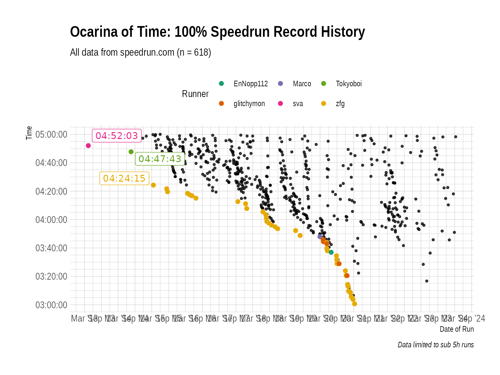
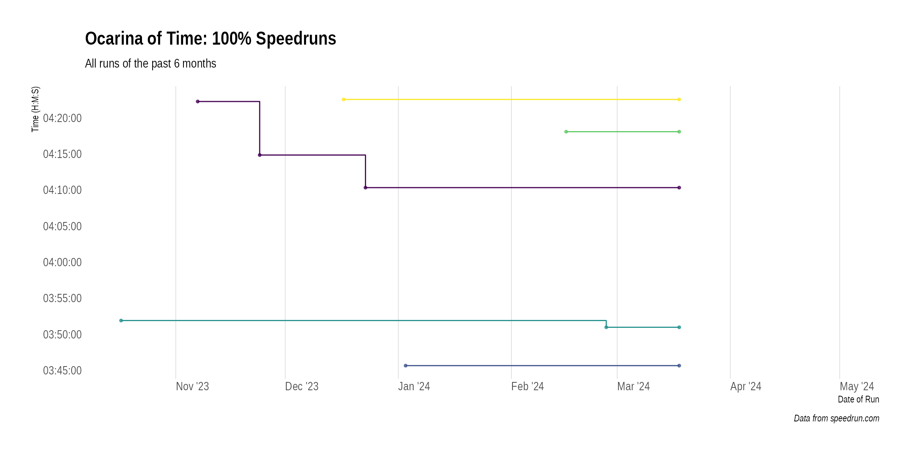

Ocarina of Time 100%
Lukas Burk
2024-03-18
Source:vignettes/ocarina-of-time-100.Rmd
ocarina-of-time-100.RmdI like Ocarina of Time 100%. So let’s take a look at that.
Identify what you want
First up we need the game’s ID and category ID. That’s easy:
library(dplyr)
library(kableExtra)
library(speedrunr)
get_games("Ocarina of Time")
#> # A tibble: 8 × 9
#> id name_international name_twitch name_abbr weblink released
#> <chr> <chr> <chr> <chr> <chr> <date>
#> 1 j1l9qz1g The Legend of Zelda: Ocarin… "The Legen… oot https:… 1998-11-21
#> 2 kdkjex1m The Legend of Zelda: Ocarin… "The Legen… ootmq https:… 2002-01-01
#> 3 268vqkdp The Legend of Zelda: Ocarin… "The Legen… oot3d https:… 2011-06-16
#> 4 76rkv4d8 Ocarina of Time Category Ex… "The Legen… ootextras https:… 1998-11-21
#> 5 m1zromd0 Ocarina of Time Beta Quest "Ocarina o… ootbq https:… 2015-11-14
#> 6 v1pol9m6 SM64: Ocarina of Time "SM64: Oca… sm64oot https:… 2018-03-26
#> 7 lde38o56 Ocarina of Time in Minecraft "Ocarina o… mcm_oot https:… 2020-11-28
#> 8 v1pxwwz6 Zelda II: Ocarina of Time "" zelda_ii… https:… 2022-05-13
#> # ℹ 3 more variables: released_year <int>, romhack <lgl>, created <dttm>
get_categories("j1l9qz1g")
#> # A tibble: 12 × 6
#> id name link type miscellaneous rules
#> <chr> <chr> <chr> <chr> <lgl> <chr>
#> 1 q255jw2o 100% https://www.speedrun.com/oo… per-… FALSE ""
#> 2 824qn3k5 100% https://www.speedrun.com/oot per-… FALSE "# I…
#> 3 zdnoz72q All Dungeons https://www.speedrun.com/oo… per-… FALSE ""
#> 4 q25g198d Any% https://www.speedrun.com/oo… per-… FALSE "# *…
#> 5 02qe4z2y Any% https://www.speedrun.com/oot per-… FALSE "# I…
#> 6 z275w5k0 Defeat Ganon https://www.speedrun.com/oo… per-… FALSE ""
#> 7 zd35jnkn Glitchless https://www.speedrun.com/oo… per-… FALSE ""
#> 8 ndxlw1dq Glitchless https://www.speedrun.com/oot per-… FALSE "# I…
#> 9 9d85yqdn GSR https://www.speedrun.com/oo… per-… FALSE "# *…
#> 10 jdrwr0k6 MST https://www.speedrun.com/oo… per-… FALSE "# *…
#> 11 xd1wj828 No Wrong Warp https://www.speedrun.com/oo… per-… FALSE ""
#> 12 rklm8qdn Restricted https://www.speedrun.com/oot per-… FALSE "# I…So we’re good.
game <- "j1l9qz1g"
category <- "q255jw2o"
oot100 <- get_runs(game = "j1l9qz1g", category = "q255jw2o", max = Inf)Note that I’m useing max = Inf to make sure I get
all the runs.
str(oot100)
#> tibble [967 × 22] (S3: tbl_df/tbl/data.frame)
#> $ id : chr [1:967] "z195w6wm" "y8w1qk1y" "yjo4jvoz" "y9jog0nm" ...
#> $ weblink : chr [1:967] "https://www.speedrun.com/oot/run/z195w6wm" "https://www.speedrun.com/oot/run/y8w1qk1y" "https://www.speedrun.com/oot/run/yjo4jvoz" "https://www.speedrun.com/oot/run/y9jog0nm" ...
#> $ game : chr [1:967] "j1l9qz1g" "j1l9qz1g" "j1l9qz1g" "j1l9qz1g" ...
#> $ level : logi [1:967] NA NA NA NA NA NA ...
#> $ category : chr [1:967] "q255jw2o" "q255jw2o" "q255jw2o" "q255jw2o" ...
#> $ videos : chr [1:967] "https://www.twitch.tv/videos/2089115687" "https://www.youtube.com/watch?v=75xbUuc3Q0U" "https://www.twitch.tv/videos/2071757626" "https://www.youtube.com/watch?v=TAsaFzVxeE4" ...
#> $ status : chr [1:967] "verified" "verified" "verified" "verified" ...
#> $ comment : chr [1:967] "[Retimed to 4:58:16 -LG]" "4th try dampe" "[Retimed to 5:14:29 -LG]" NA ...
#> $ player_id : chr [1:967] "jn95rndx" "v8l62g78" "jn95rndx" "8g516wyj" ...
#> $ player_url : chr [1:967] "https://www.speedrun.com/user/vaho_66" "https://www.speedrun.com/user/EricDaCleric" "https://www.speedrun.com/user/vaho_66" "https://www.speedrun.com/user/EdenSugar" ...
#> $ player_name : chr [1:967] "vaho_66" "EricDaCleric" "vaho_66" "EdenSugar" ...
#> $ player_role : chr [1:967] "user" "user" "user" "user" ...
#> $ player_signup : POSIXct[1:967], format: "2021-09-12 18:29:50" "2017-07-13 02:45:16" ...
#> $ date : Date[1:967], format: "2024-03-12" "2024-02-27" ...
#> $ submitted : POSIXct[1:967], format: "2024-03-13 00:15:15" "2024-03-01 07:47:04" ...
#> $ time_primary : num [1:967] 17896 13858 18869 15484 13539 ...
#> $ time_realtime : num [1:967] 17896 13858 18869 15484 13539 ...
#> $ time_ingame : int [1:967] 0 0 0 0 0 0 0 0 0 0 ...
#> $ time_hms : 'hms' num [1:967] 04:58:16 03:50:58 05:14:29 04:18:04 ...
#> ..- attr(*, "units")= chr "secs"
#> $ system_platform: chr [1:967] "nzelreqp" "nzelreqp" "nzelreqp" "nzelreqp" ...
#> $ system_emulated: logi [1:967] FALSE FALSE FALSE FALSE FALSE FALSE ...
#> $ system_region : chr [1:967] "o316x197" "o316x197" "o316x197" "o316x197" ...We want some additional data:
oot100 <- oot100 %>%
add_platforms() %>%
add_regions() %>%
find_records()
oot100 %>%
arrange(time_hms) %>%
select(time_hms, record, player_name, date, system_platform, system_region) %>%
head(10) %>%
kable() %>%
kable_styling()| time_hms | record | player_name | date | system_platform | system_region |
|---|---|---|---|---|---|
| 03:00:39 | TRUE | zfg | 2021-03-11 | Wii Virtual Console | JPN / NTSC |
| 03:03:43 | TRUE | zfg | 2021-02-22 | Wii Virtual Console | JPN / NTSC |
| 03:04:39 | TRUE | zfg | 2021-02-15 | Wii Virtual Console | JPN / NTSC |
| 03:05:03 | TRUE | zfg | 2021-02-10 | Wii Virtual Console | JPN / NTSC |
| 03:05:49 | TRUE | zfg | 2021-02-02 | Wii Virtual Console | JPN / NTSC |
| 03:06:32 | FALSE | glitchymon | 2021-02-26 | Wii Virtual Console | JPN / NTSC |
| 03:08:33 | TRUE | zfg | 2021-01-25 | Wii Virtual Console | JPN / NTSC |
| 03:08:38 | TRUE | zfg | 2021-01-20 | Wii Virtual Console | JPN / NTSC |
| 03:09:19 | TRUE | zfg | 2021-01-15 | Wii Virtual Console | JPN / NTSC |
| 03:09:39 | TRUE | zfg | 2021-01-05 | Wii Virtual Console | JPN / NTSC |
Category Overview
Now we can take a look at the categories (recent) history, with highlighted records:
library(ggplot2)
library(ggrepel)
library(hrbrthemes)
library(hms)
oot100 %>%
filter(time_hms < hms::hms(hours = 5)) %>%
{
ggplot(., aes(date, time_hms)) +
geom_point(size = 1, alpha = .75) +
geom_point(size = 2, data = filter(., record), aes(color = player_name)) +
geom_label_repel(data = filter(., record),
aes(label = time_hms, color = player_name),
fill = "white", show.legend = F) +
scale_x_date(date_breaks = "6 months", date_labels = "%b '%y") +
scale_y_time(breaks = seq(2 * 60^2, 20 * 60^2, 1/3 * 60^2),
minor_breaks = seq(2 * 60^2, 20 * 60^2, 5 * 60)) +
scale_color_brewer(palette = "Dark2") +
labs(title = "Ocarina of Time: 100% Speedrun Record History",
subtitle = paste0("All data from speedrun.com (n = ", nrow(.), ")"),
x = "Date of Run", y = "Time",
color = "Runner", caption = "Data limited to sub 5h runs") +
theme_ipsum() +
theme(legend.position = "top")
}
#> Warning: ggrepel: 46 unlabeled data points (too many overlaps). Consider
#> increasing max.overlaps
Please note that the data on speedrun.com does not cover the whole history. There are lots of older runs missing here, and unless the mods come together und do some historic backlogging, that’s as good as it gets for now.
We can also take a look at the recent developments:
library(lubridate)
tmp <- oot100 %>%
filter(time_hms < hms::hms(hours = 4, minutes = 30),
date >= today() - months(6)) %>%
select(player_name, time_hms, date)
bind_rows(
tmp,
tmp %>%
group_by(player_name) %>%
summarize(time_hms = min(time_hms), date = today()) %>%
ungroup
) %>%
{
ggplot(., aes(x = date, y = time_hms,
color = player_name, fill = player_name)) +
geom_point(size = 1, alpha = .75) +
geom_step() +
geom_label_repel(
data = . %>%
group_by(player_name) %>%
summarize(y = min(time_hms), x = max(date)),
aes(label = player_name, x = x, y = y),
color = "black", alpha = .75, show.legend = F,
hjust = 1, direction = "y", nudge_x = 60^2
) +
scale_x_date(date_breaks = "1 month", date_labels = "%b '%y",
limits = c(as.Date(NA), today() + days(45))) +
scale_y_time(breaks = seq(0, 20 * 60^2, 1/12 * 60^2),
minor_breaks = seq(0, 20 * 60^2, 1/24 * 60)) +
scale_color_viridis_d(
direction = -1, guide = FALSE, aesthetics = c("color", "fill")
) +
labs(title = "Ocarina of Time: 100% Speedruns",
subtitle = "All runs of the past 6 months",
caption = "Data from speedrun.com",
x = "Date of Run", y = "Time (H:M:S)") +
theme_ipsum(grid = "X") + theme(axis.text.x = element_text(hjust = 0))
}
#> Warning: The `guide` argument in `scale_*()` cannot be `FALSE`. This was deprecated in
#> ggplot2 3.3.4.
#> ℹ Please use "none" instead.
#> This warning is displayed once every 8 hours.
#> Call `lifecycle::last_lifecycle_warnings()` to see where this warning was
#> generated.
#> Warning: Removed 5 rows containing missing values or values outside the scale range
#> (`geom_label_repel()`).